Intel® Graphics Performance Analyzers
User Guide
Metrics Pane
In the Metrics pane, you can analyze hardware and Application Programming Inferface (API) metrics for specific events. The Metrics pane is hidden if metrics are not available on your platform.
Analyzing the metrics can help you understand and prove the correctness of the rendering algorithms, as well as understand performance and bottlenecks down to specific GPU pipeline stages or hardware unit. When nothing is selected, the Graphics Frame Analyzer displays the total values for the entire frame.
When you experiment with the frame, metrics update immediately to reflect the changes. To switch between the different metrics types, select the corresponding tabs on the Metrics pane: Bottlenecks, Metrics (Selection), or Metrics (Frame).
Bottlenecks
The Bottlenecks tab group display all automatically detected GPU bottlenecks and related metrics.
To see the cause of the bottlenecks, hints, and related metrics, click the corresponding bottleneck. Bottlenecks are marked with a colored hot spot icon on the left:
 indicates a primary bottleneck.
indicates a primary bottleneck. indicates a secondary, or potential, bottleneck.
indicates a secondary, or potential, bottleneck.
In the  Advanced Profiling mode, a pie chart displays for each bottleneck. The pie chart shows the percentage of time spent on API calls related to that bottleneck, with respect to the entire frame. Primary bottlenecks display in red and secondary bottlenecks display in yellow sections.
Advanced Profiling mode, a pie chart displays for each bottleneck. The pie chart shows the percentage of time spent on API calls related to that bottleneck, with respect to the entire frame. Primary bottlenecks display in red and secondary bottlenecks display in yellow sections.
Metrics (Selection)
The metrics are collected into several high-level groups, each group containing multiple metrics appropriate to that grouping.
If all the metrics in the group are selected, the group name checkbox shows a checkmark  . If only some of the metrics in the group are selected, the group name checkbox shows a line
. If only some of the metrics in the group are selected, the group name checkbox shows a line  .
.
In this view you can:
expand or collapse individual groups by toggling the
 arrow next to the metrics group name.
arrow next to the metrics group name.select or deselect all the metrics in a group by selecting or deselecting the checkbox in the group heading.
collapse all the groups by clicking
 Collapse All Groups.
Collapse All Groups.select an individual metric by clicking the checkbox in the metrics row.
hover over a metric to see the full metric name and description.
toggle between seeing all possible groups and metrics or only the selected groups and metrics by clicking
 Hide unselected metrics. (The icon toggles to
Hide unselected metrics. (The icon toggles to  Show unselected metrics. You can toggle between states.)
Show unselected metrics. You can toggle between states.)export metrics results for the selected metrics to a .csv file by clicking
 Export Metrics Values. (The icon toggles to
Export Metrics Values. (The icon toggles to  showing progress and canceling the export).NOTE:After applying the export, metrics are not calculated in the Metrics pane until the export is complete.
showing progress and canceling the export).NOTE:After applying the export, metrics are not calculated in the Metrics pane until the export is complete.
If you enable the Collect fast/stable metrics, metrics will be colored if they have a significant standard deviation. A particular value of its standard deviation can be viewed in the SD% column or by hovering over the metric.
Metrics Pane
Metrics Pane
Metrics Pane
Metrics Pane
The API Log consists of the following elements:
-
API Log toolbar
-
API Log tab
-
Pixel History tab
-
Resource History tab
-
Frame Statistics tab
Tabs in API Log use a shared set of controls for all item types.
When you select an item in the Bar Chart View, Graphics Frame Analyzer highlights the corresponding items in the API Log tabs.
API Log Toolbar
Use the API Log toolbar to manage the API Log:
-
Use Type Filter Expression to:
-
Filter API Log items by name or description.
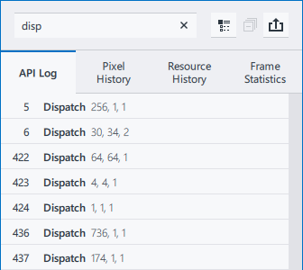 -
Filter calls by number, use the # symbol followed by the starting digits. To select a specific call number, add a space at the end.
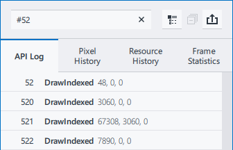 -
Filter the history.
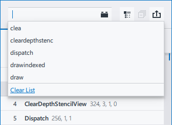 -
Find specific events. Run 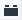 Graphics Frame Analyzer Plugins for this purpose.
-
-
Display all the functions used in the frame in the API Log, in the call order.
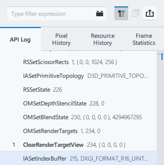By default, the API Log tab shows only graphics API functions that produce any GPU activity, such as draw calls or clear calls. These graphics API functions are also called “events”.
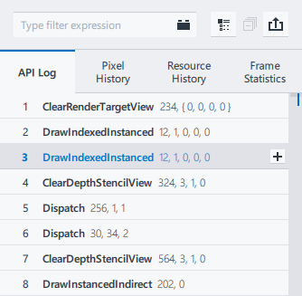 -
Where available, collapse all groups in the API Log tab.
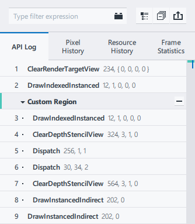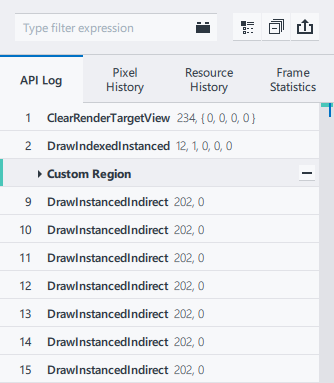 -
Export the API Log in CSV format. You can also export the API Log by pressing Ctrl+S.
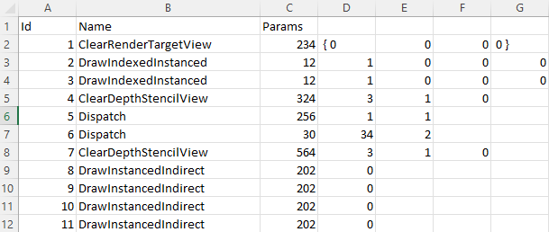
API Log Tab
Review the list of all functions in the GPU execution order, along with the parameters passed to each of them.
To group events, use the Group By drop-down button on the Bar Chart Toolbar.
You can expand or collapse a region by clicking the triangle to the left of the region name or use Right/Left arrow keys when the region is selected.
To display user-defined instrumentation (Microsoft PIX) markers and regions, select Debug Regions from the Group By drop-down.
To create a custom region, do the following:
-
In the Bar Chart Toolbar, select Custom Regions in the Group By drop-down list.
-
In the API Log tab, select an event or a group of sequential events, and click
 .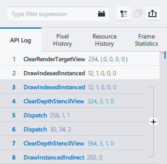
.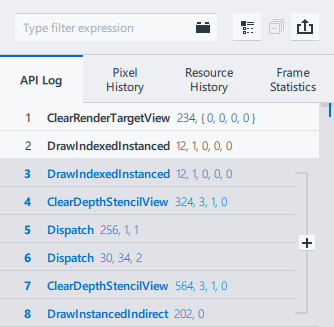 -
Enter a name for the custom region. To delete the created custom region, click .
To add a nested region inside a created custom region, click
. The depth level is indicated by the number of dots preceding the event name.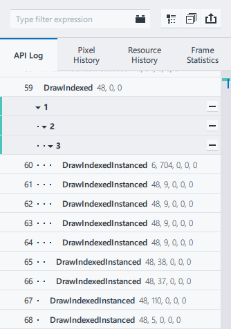
Created custom regions are saved between frame opens. Custom regions are not available in Advanced Profiling Mode.
Pixel History Tab
The Pixel History tab shows only the events that contribute to the pixel specified in the Resources tab. Pixel History analysis is supported for DX11/OpenGL Frame and DX12 Frame/Stream on Windows.
To analyze Pixel History, click on the render target pixel you want to analyze in the Resource Viewer. To use precise coordinates, modify the coordinate fields in the Pixel History tab. Then click Go. Graphics Frame Analyzer marks the selected pixel with a crosshair and filters the API calls to display only those events that affected this pixel. The colored boxes next to each call show the color written into the frame buffer after the API call execution. Also, under each draw call, there is information about how many times the pixel was touched by this particular call. If the call was rejected at a stage in the pipeline, the box appears next to the call. The reason for rejection displays below.
Resource History Tab
The Resource History tab shows only the events that use the resource selected from the Resource List.
- To see the history of a resource either:
-
-
Double-click on the resource in the Resource List
-
Select the resource and click the button.
-
Choose the resource from the Select Resource drop-down list in the Resource History tab.
-
Frame Statistics Tab
The Frame Statistics tab shows the count of each event type within the frame. Event types that correspond to the current selection are highlighted. To select all events of a specific type, click on the event type.